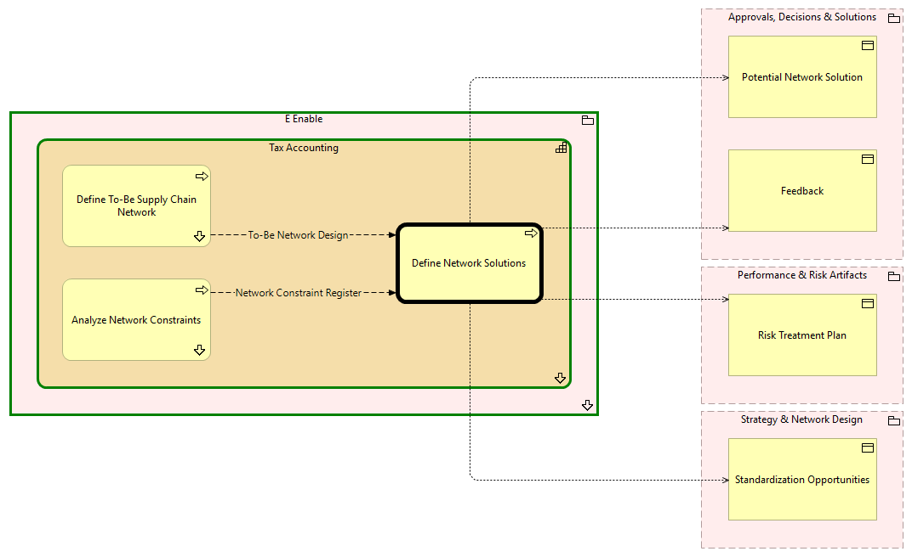

Define Network Solutions - Context
(
)

generated_by
build_archi_xml.py::gen_proc_node_context_view
generator_path
pedro/capabilities/build_archi_xml_assign/build_archi_xml_assign.py
run_at
2026-10-10T17:57:05
view_type
process_context
E Enable
Tax Accounting
Analyze Network Constraints
Analyze Network Constraints - Context
Define Network Solutions
Define To-Be Supply Chain Network
Define To-Be Supply Chain Network - Context
Tax Accounting - Processes
E Enable - Processes
Approvals, Decisions & Solutions
Feedback
Potential Network Solution
Performance & Risk Artifacts
Risk Treatment Plan
Strategy & Network Design
Standardization Opportunities
Network Constraint Register
Analyze Network Constraints
Define Network Solutions
Define Network Solutions
Feedback
Define Network Solutions
Potential Network Solution
Define Network Solutions
Risk Treatment Plan
Define Network Solutions
Standardization Opportunities
To-Be Network Design
Define To-Be Supply Chain Network
Define Network Solutions